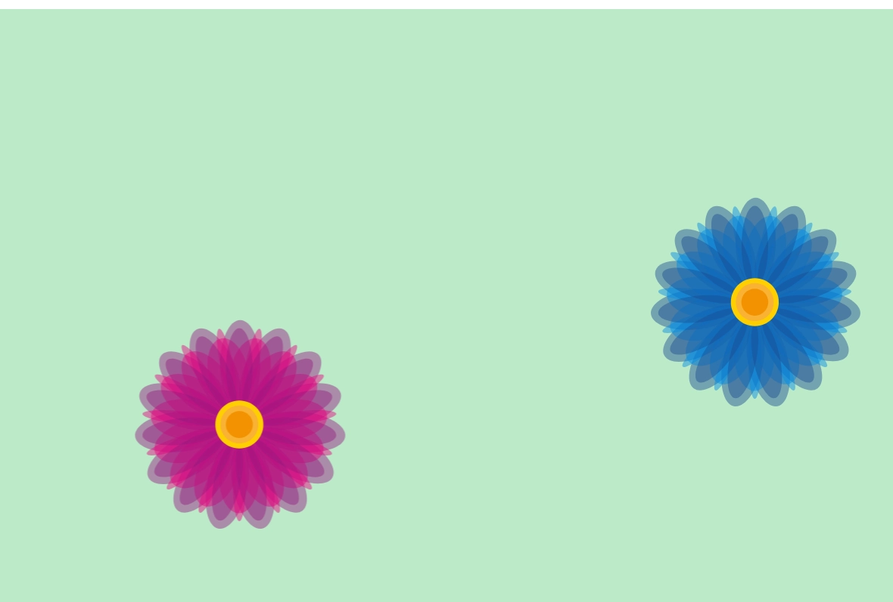

Space Invaders
I tema 4 blev jeg stille den opgave at fremstille interaktive brugergrænseflader der engagerer og motivere brugeren, i form af interaktive animationer.
Design
Starting point
I started out with Toca Band as my gamedesign theme. My name of the game was, Save the planet. The idea was save the earth from evil aliens who wants to overtake the earth and wipe out the population.

I've come a long way since my first idea and I've been inspired on many websites when I've searched for aliens and space. I started with the Kawaii style, but jumped towards toca band styles, but hit something that appealed to me by the style I found. I see it as a form of kawaii.

The name of the game changed many times but ended with Space invaders. I wanted a name that was more catchy and more suited to my idea and I think it sounds better and reminds me of a real game.
When i was receiving feedback i was someone remembered me about
the old and very popular game Space Invaders, which I never close to copieng but one comment, that totally made sense, was that i could have giving a tribute to the old game in form of a small hint somewhere in the game.
Process
Begyndelsen på javascript startede med simpel opbygning i HTML, hvor jeg placere mit link til javascript som det sidste, fordi siden bliver læst fra top til bund, og for at undgå fejl.
I CSS beegyndte jeg at lave simpelt animation i form af denne, som består i at få en ting til at falde.

I javascript begyndte jeg med starte simpelt op med simpelt hilsen idet man gik ind på en side.

Efter at have klikket OK, kom man ind på siden hvor et turquise hej falder fra top til bund.
Progression
Jeg begyndte igennem mange øvelser at ligge mere til og dette eksemple lavede jeg to blomster, en rød og en blå, hvor jeg begyndte med den røde blomsts adfærd.
CSS
I CSS lavede jeg disse keyframes som animere blomsten.
flyv viser at blomsten skal animere i 4 sekunder og det skal være uendeligt på en linje.
Flyv keyframes gør at blomsten vil tranformere på X aksen fra 0 til 100%

I javasricpt begyndte jeg fortælle hvad der skulle ske med mine blomster.
Når min side vises skulle mine ene blomsten starte på position 1 og begynde at flyve over skærmen.
Når man klikkede på den røde blomst ville mine funktion clickRed begynde.
Her ser vi hvordan siden ville se ud.
Man skal forstille sig den røde blomst flyver fra venstre side og ud i højre side
